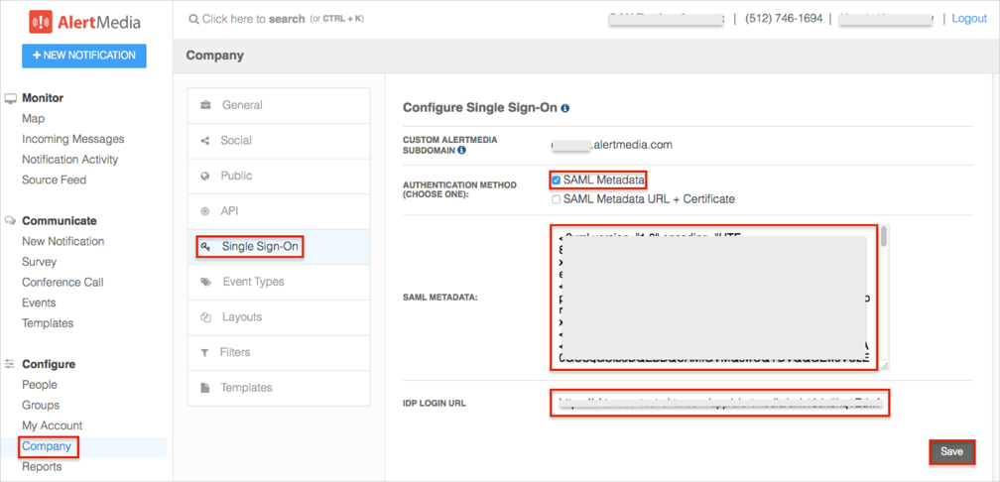

Login to AlertMedia as an administrator.
Navigate to Company > Single Sign-On, then enter the following (see screen shot at end of step for reference):
AUTHENTICATION METHOD: Select SAML Metadata.
SAML METADATA: Copy and paste the following:
Sign in to Okta Admin app to have this variable generated for you.
IDP LOGIN URL: Copy and paste the following:
Sign into the Okta Admin Dashboard to generate this variable.
Click Save.

Done!
Notes:
IdP-initiated flows, SP-initiated flows, and Just In Time (JIT) Provisioning are all supported.
Open the following URL: https://[yourSubDomain].alertmedia.com/#/login